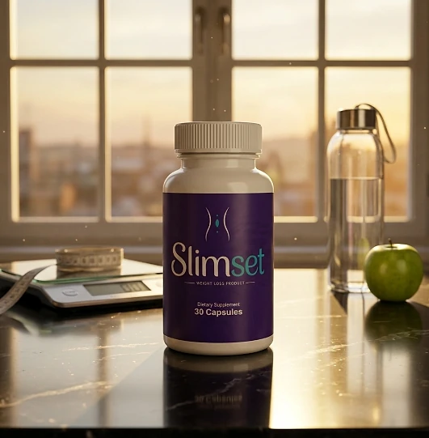
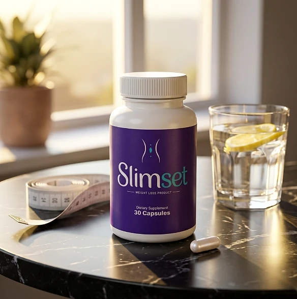
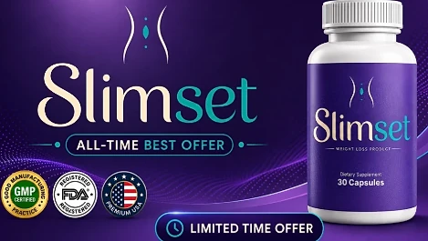

What Is Slimset And How Does It Work?
Slimset is a dietary supplement in capsule form designed to support appetite control, everyday metabolism, and steady energy for adults who want to address the cravings, afternoon energy dips, and slow progress that can make weight goals feel out of reach through a natural, dependable approach — without complicated routines or temporary quick fixes.
It utilizes a simple daily capsule that combines Green Coffee Bean Extract, Raspberry Ketone, Garcinia Extract, Green Tea Extract, and Caffeine Anhydrous to support satiety, thermogenesis, and alertness, helping the body maintain its natural balance throughout the day.
The ingredients in Slimset are standardized plant extracts and caffeine that, according to the official website, support several aspects of metabolic wellness at once: appetite regulation, thermogenesis, and everyday energy, particularly for adults who prefer one simple capsule a day over multiple products or complicated plans.
Rather than acting as a short-lived artificial fix, Slimset is presented as a daily ritual that works alongside diet and activity, helping to maintain healthy eating habits, steady energy, and long-term wellness.
With consistent daily use, the formula is intended to provide support for appetite control and energy through the day, and the official website itself says results take time and work best alongside a balanced diet and regular activity.
From a practical standpoint, Slimset is a daily weight management capsule with caffeine designed to support wellness from within — helping you stay active, energized, and in control of your health.
Manufactured in the USA with globally sourced ingredients, according to the product label, and produced in an FDA-registered, GMP-certified facility, according to the official website, Slimset is designed for regular daily use, focusing on safety, purity, and quality for those seeking a non-prescription route to healthy weight management.
Slimset Ingredients
Every capsule of Slimset contains five active ingredients listed on the Supplement Facts panel, each with its amount and standardization disclosed and chosen to support appetite control, metabolism, and energy as part of a consistent daily routine:
Green Coffee Bean Extract (130 mg): A Coffea robusta seed extract standardized to 50% chlorogenic acids, studied in connection with metabolism and appetite after meals.
Raspberry Ketone (130 mg): A compound included to complement the formula's metabolic support.
Garcinia Extract (130 mg): A Garcinia cambogia fruit extract standardized to 50% HCA, included to support healthy satiety signals.
Caffeine Anhydrous (138 mg): A concentrated form of caffeine, roughly the amount in a strong cup of coffee, that supports alertness and energy.
Green Tea Extract (130 mg): A Camellia sinensis leaf extract standardized to 98% polyphenols and 45% EGCG, associated with thermogenesis and antioxidant protection.
Together, these ingredients work synergistically to support appetite regulation, calorie burning, and everyday energy from within. The only other ingredient on the label is hypromellose (vegetable capsule), the label states plainly that the product contains caffeine, and the official website describes the formula as non-GMO and gluten-free.
Slimset is designed for daily use, offering a non-prescription approach to supporting weight management, without injections, powders, or complicated routines.
Slimset Side Effects
Slimset is designed for adults of different ages and lifestyles who are looking for a simple approach to weight management, especially those who prefer an easy one-capsule daily routine to support appetite control, energy, and well-being without resorting to risky solutions with severe side effects.
All ingredients used in Slimset are described on the official website as researched for safety and recognized nutritional roles, and Slimset is made in the USA in an FDA-registered, GMP-certified facility, according to the same source, reinforcing consistency, safety, and reliability.
The main point of attention is caffeine. The official website carries its own notice: each capsule has 138 mg of Caffeine Anhydrous, plus the caffeine naturally present in green coffee bean and green tea, so it should be taken earlier in the day and not combined with other caffeinated products. People sensitive to stimulants may notice jitters, a faster heartbeat, or trouble sleeping, and those with heart conditions, high blood pressure, or anxiety should talk to a doctor first. It is not intended to diagnose, treat, cure, or prevent any disease, and individual results may vary.
According to the label, pregnant or nursing mothers, children under the age of 18, and individuals with a known medical condition should consult a physician before using Slimset, and the official website says it is not recommended for anyone who is pregnant, nursing, under 18, or sensitive to stimulants, ensuring it fits safely within your personal wellness plan.
Slimset Dosage
The recommended Slimset dosage is one capsule a day with an 8 oz. glass of water, and it is designed to fit easily into a daily routine, making consistency simple and convenient. Formulated as an easy daily vegetable capsule, it requires no powders to mix, no drinks to prepare, and nothing to measure.
The recommended approach, as printed on the label, is to take one (1) Slimset capsule daily, 20 to 30 minutes before a meal. The official website adds that, because of the caffeine, it is best taken before the morning meal, or as directed by your healthcare professional, which allows the ingredients to work without interfering with sleep.
For best results, consistency is key. Each bottle contains 30 capsules, a one-month supply, and because nutritional support for metabolism builds gradually, the official website notes that many people allow 60 to 90 days of consistent daily use.
There is no need for complex schedules or multi-step routines. One simple daily capsule is designed to complement a balanced diet, good sleep, and an active lifestyle. The label also advises storing the bottle in a cool, dry place away from heat and light, and not using it if the safety seal is damaged or missing.
As with any dietary supplement, it's important not to exceed the recommended dose — one capsule already carries a meaningful amount of caffeine — and to check the label on your bottle. Slimset works best when used regularly, combined with proper hydration, balanced nutrition, and healthy daily habits.
Slimset – Refund Policy
You can order Slimset with confidence, knowing that every purchase is protected by a 60-day money-back guarantee. This allows you to try the formula and decide if it delivers the support you expect.
According to the refund policy on the official website, if you are not completely satisfied for any reason, you may request a full refund within 60 days of your original order date. Shipping charges, where applicable, are not refunded, and the customer pays the return shipping unless the product arrived damaged or incorrect.
How the refund process works: If you decide Slimset is not right for you, email customer support within 60 days with your order number and the email address used at checkout. The team replies with the return instructions and the return address, and you then send back any remaining or unopened bottles as instructed.
Customer Support Contact Information: support@healthyconsumer.us, as printed on the product label, or the toll-free line (877) 257-0825 listed on the official website. The support team is available Monday through Friday, 9 AM to 5 PM EST.
Refund Processing Time: Once your request is approved, the refund is issued to the original payment method, and it may take 5 to 10 business days to appear, depending on your bank or card issuer.
This refund policy is designed to give customers a clear and transparent experience when trying Slimset. If an order arrives damaged or incorrect, the policy asks customers to get in touch within 30 days of delivery.
Slimset – Where To Buy
Slimset is sold through its official website, so if you decide to try it, it's important to be careful about where you purchase it. The official website is the only sales channel the manufacturer lists, and it does not point to marketplaces such as Amazon, eBay, or Walmart.
Listings on third-party platforms may look similar but cannot be verified as authentic, raising concerns about safety, quality, and ingredient freshness. Products purchased outside the official source may not be covered by the 60-day guarantee.
For this reason, it makes sense to purchase Slimset only through the official website. Buying directly from the official source ensures you receive the authentic original product, made in the USA, with access to customer support and the full guarantee. According to the official website, the product is sold exclusively there, and every order is a one-time purchase, with no subscriptions, automatic re-bills, or hidden charges.
To avoid counterfeit batches and ensure maximum quality, always verify that you are ordering from the official Slimset website before completing your purchase.
To ensure you’re getting the authentic product, most users choose to visit the official website.
Is Slimset A Scam?
Based on what the official website and the product label disclose, Slimset does not appear to be a scam. It is a real capsule supplement, sold through an established retailer, and formulated to support appetite control, metabolism, and energy as part of a consistent routine.
The ingredients used in Slimset — Green Coffee Bean Extract, Raspberry Ketone, Garcinia Extract, Green Tea Extract, and Caffeine Anhydrous — are well known in the wellness field, and the label publishes a full Supplement Facts panel with the amount and the standardization of each one for transparency.
In addition to its formula, Slimset is manufactured in the USA with globally sourced ingredients, according to the product label, and the official website warns buyers about the caffeine content before they order, with a focus on safety, purity, and consistency.
Expectations should stay realistic: this is a caffeine-based formula with plant extracts, and the evidence for ingredients such as raspberry ketone and garcinia in people is modest. Results vary from person to person, and no supplement replaces a balanced diet, regular exercise, or medical care.
Slimset is backed by a 60-day money-back guarantee, and orders are one-time purchases with no subscriptions or hidden charges. The refund steps, the return address, and the support hours are published on the official website, which underscores the manufacturer's transparency with customers.
If you're looking for a simple daily capsule to support appetite control, energy, and well-being without complicated routines, and you tolerate caffeine well, Slimset is worth considering — especially when purchased directly from the official website.
For those who want to verify product details or check current availability, the official Slimset website remains the safest option.

Check Availability On Official Website
